ダウンロードから接続完了まで、4 ステップでご案内します。
所要時間は 5 〜 10 分ほど。スクリーンショット通りに進めれば迷いません。
このサイトの「動作環境」セクションから MonoFlick Companion の DMG をダウンロードします。 iPhone アプリは別途 App Store から入手してください。
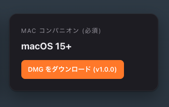
ダウンロードした MonoFlick-Companion-1.0.0.dmg をダブルクリックしてマウントします。
Finder にディスクイメージが開き、MonoFlick Companion.app と
Applications ショートカットが表示されます。
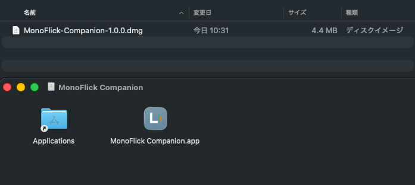
MonoFlick Companion.app を Applications アイコンへドラッグして インストール完了です。インストール後は DMG をアンマウント(取り出し)して問題ありません。
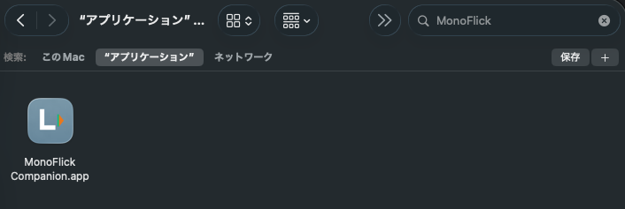
メニューバー右上の MonoFlick アイコン(赤丸の部分)をクリックすると、
ポップオーバーが開きます。
下部の 「Accessibility 権限: 未許可」 横にある
「システム設定を開く」 をクリックしてください。
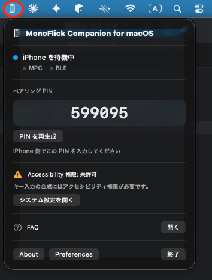
システム設定の 「アクセシビリティ」 画面で MonoFlick Companion.app の トグルを ON にします。 確認ダイアログが出たら Mac のログインパスワードまたは Touch ID で承認してください。
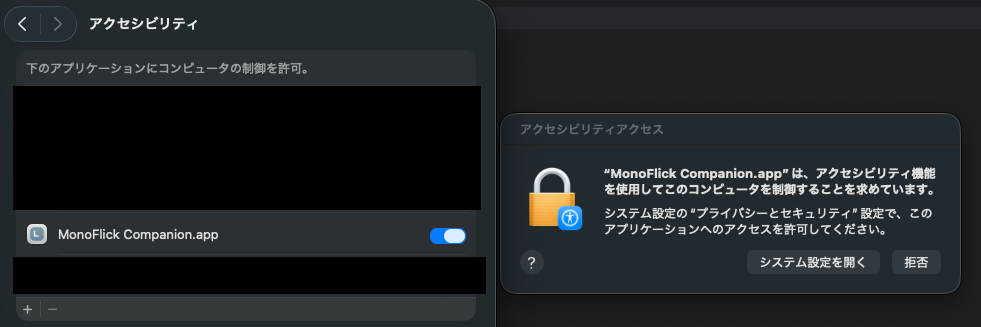
アクセシビリティで MonoFlick Companion を ON にする画面">再度メニューバーから MonoFlick を開き、 「Accessibility 権限: 許可済み」 と緑のチェックが表示されていれば OK です。
権限の確認が取れたら次のステップへ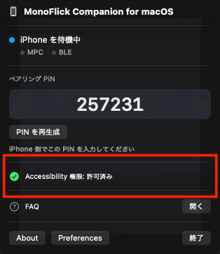
iPhone で MonoFlick アプリを起動し、右上の 歯車アイコン (赤丸の部分) をタップして設定を開きます。
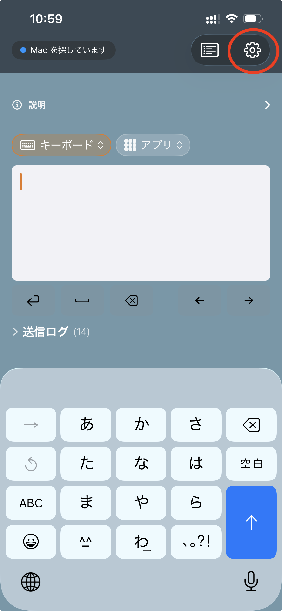
設定画面の「ペア」セクションにある 「ペアリングを開始」 をタップします。
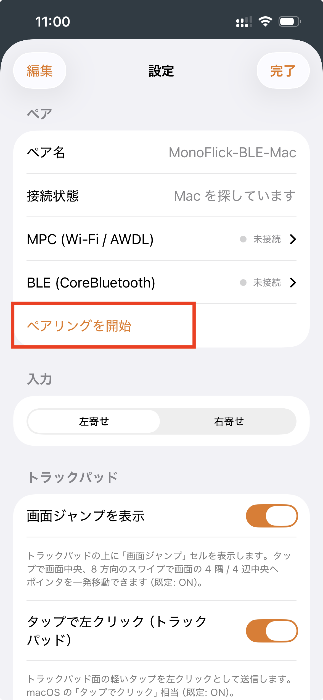
近くで検出された Mac の一覧が表示されます。接続したい Mac の名前をタップしてください。
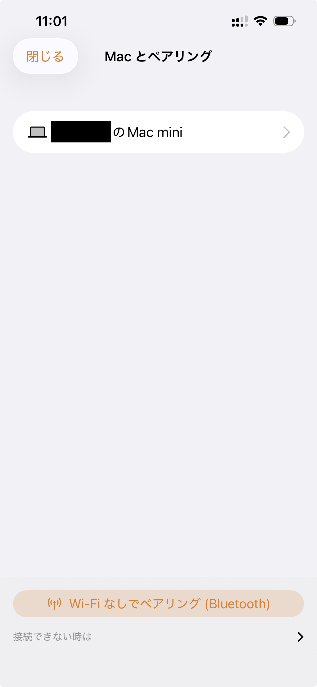
Mac のメニューバーポップオーバーに表示されている 6 桁の数字
(例: 599095) を、iPhone 側のテンキーで入力します。
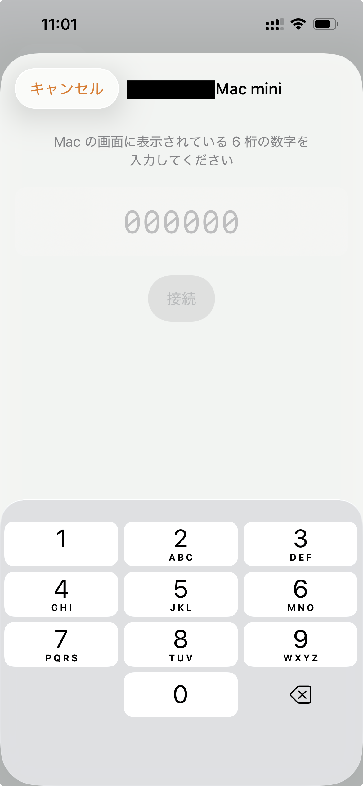
PIN が正しければ MPC (Wi-Fi / AWDL) 経由で接続が確立し、設定画面の 接続状態が 「接続(PCの名前)・MPC」 になります。これで Wi-Fi 環境では既に利用可能です。
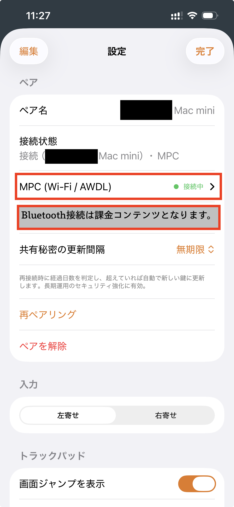
BLE を含めて接続する際、Mac に キーチェーンアクセスのパスワード入力ダイアログ が表示されます。ログインパスワードを入力し、「常に許可」 をクリックしてください。
dev.foo.MonoFlick.Companion.pair) をキーチェーンに保存します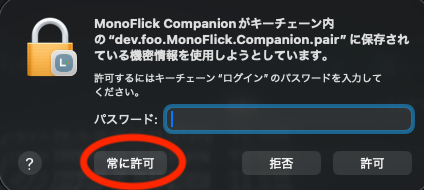
接続状態が 「接続(PCの名前)・MPC + BLE」 になり、MPC と BLE の両方が「接続中」と緑表示されれば成功です。
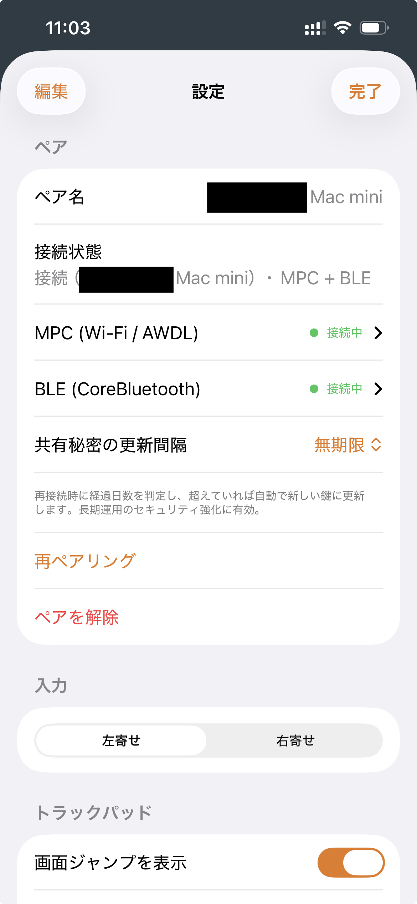
iPhone のフリックキーボードで打った文字が、Mac のフォアグラウンドアプリに即時送信されます。